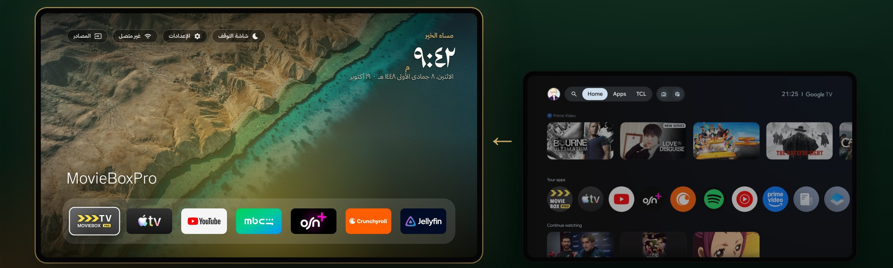
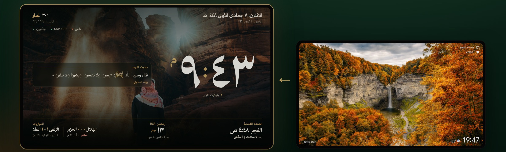

واجهة رئيسية عربية بزجاج شفاف، وشاشة توقف سعودية بالساعة والتاريخ الهجري ومواقيت الصلاة ومباريات فريقك. لتلفزيونات Android TV و Google TV، مجاناً.

بدل واجهة مليانة إعلانات واقتراحات، تفتح الشاشة على صورة من طبيعة السعودية، فوقها زجاج صافي فيه اللي يهمك بس: الساعة، الصلاة القادمة، الطقس، مباراة فريقك، وتطبيقاتك المفضلة تحت.
البطاقات والشريط العلوي زجاج صافي فوق الصورة، والخلفية تتغير كل نص ساعة.
بطاقة بمواقيت صلاة مدينتك والوقت الباقي للإقامة، والتاريخ الهجري تحت الساعة.
المباراة القادمة للأندية اللي تتابعها، بأسماء الدوريات والفرق بالعربي.
طقس مدينتك وتحية باسمك: «مساء الخير يا …» حسب الحساب اللي فاتح.
حساب لكل واحد في البيت، برمز سري لو تبغى، وكل حساب له تطبيقاته وإعداداته.
امسح الرمز من جوالك وارسل صورك، وتصير خلفية حسابك وشاشة التوقف.
مبدّل تطبيقات مثل الآيفون: سكّر أو أعد تشغيل أو احذف أي تطبيق بضغطة.
ساعة كبيرة، رمضان والإقامة، مباريات، أسواق، وآية وحديث اليوم فوق مناظر سعودية.
تبقى AZ TV الواجهة الرئيسية دائماً، حتى لو التحديث رجّع واجهة جوجل.

بعض تلفزيونات Google TV ترجّع واجهتها الأصلية بعد تحديث أو إعادة تشغيل. من الحين، AZ TV ترجع نفسها فوراً، وتبقى هي الواجهة ولا تتغير أبداً.
الخدمة تشوف بس أي تطبيق صار في المقدمة، وما تقرأ شي من الشاشة. وللإيقاف: اضغط مطوّلاً على نفس الخيار.
تطبيقين: الواجهة الرئيسية، وشاشة التوقف. الأفضل تركّب الاثنين.
الساعة والهجري والصلاة والمباريات والطقس فوق مناظر سعودية.
تنزيل شاشة التوقف ↓ما يحذف أي تطبيق، وما يلمس AirPlay ولا Chromecast ولا الصوت ولا المداخل. وتقدر ترجع واجهة التلفزيون الأصلية متى ما بغيت: أوقف «الواجهة الثابتة» بضغطة مطوّلة، أو احذف التطبيق.
أي تلفزيون أو جهاز Android TV أو Google TV (TCL، Sony، Xiaomi، Chromecast مع Google TV، وغيرها).
إذا قال «التطبيق غير مثبّت» احذف النسخة القديمة أول ثم ثبّت الجديدة (النسخ القديمة موقّعة بمفتاح ثاني).